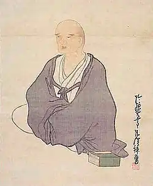

Бусон Йоса (1716, с. Кема поблизу Осаки — 25.11.1783, Кіото) — японський поет і художник.Про життя Бусона відомо дуже мало, особливо про юність. З тих чи інших причин він замовчував де-деякі обставини свого життя і лише за досить скупими, сказаними мимохідь зауваженнями в його листах можна висловити ті чи інші здогади. Сім'я його, судячи з усього, жила в достатку. Батько був чимось на кшталт сільського старости. Матір походила з містечка Йоса, можливо, саме тому згодом поет називав себе Йоса Бусоном. Цим ім'ям він підписував свої твори у зрілому віці, до цього він використовував інші псевдоніми. Згідно із традицією, пристаючи до певної поетичної школи і починаючи друкуватися, поет неодмінно брав собі псевдонім, який згодом можна було поміняти.
У дитинстві Бусон здобув добру освіту, він читав китайських і японських класиків, навчався живопису. Припускають, що Бусон рано втратив батьків, у 17—19 років він покинув Едо. Відтоді у рідні місця він ніколи не повертався. Ностальгійним почуттям пронизані більшість хоку Бусона, особливо поетичний цикл "Весняний вітерець над дамбою Кема". Одна із таємниць його життя: чому, провівши більшу частину життя в Кіото, неподалік від свого рідного селища, він так і не побував там.
Приїхавши в Едо, щоб навчатися живопису та поезії, він незабаром приєднався до поетичної школи "Опівнічна альтанка" ("Яхантьо"), глава якої, Хаяно Хадзш, був продовжувачем поетичної лінії Басьо. В цей час по цілій країні поширився рух за "повернення до Басьо", і школа Хадзіна відіграла в цьому русі чи не основну роль. Після смерті Хадзіна Бусон покинув Едо і близько 10 років провів у мандрах. Він то жив у свого приятеля поета Ганто у містечку Юкі, то блукав районом Тохоку, то, намагаючись повторити шлях Басьо, мандрував Північчю. Бусон не залишив детальних подорожніх щоденників, але багато вражень зафіксовані в есе ("хайбун"), які він писав і тоді, і пізніше. У 1753 р. Бусон перебрався в Кіото, де і жив до самої смерті. У Кіото Бусон незабаром став однією із центральних постатей у середовищі художників-інтелектуалів. Друзі Бусона були водночас і вченими, і філософами, і літераторами. Іноді їх називали дилетантами. Далекі від усіх суспільних рухів, вони намагалися, порвавши зв'язки зі світом, віднайти свободу духу у світі мистецтва. Справжній "інтелектуал" ("бундзін") — це людина, котра не перебуває на службі, котра живе вільно і займається мистецтвом, причому обізнана водночас із 5 видами мистецтва — віршами, прозою, каліграфією, живописом, музикою. Творячи невимушено, вони приховували за зовнішньою простотою і свободою самовираження, за гаданою ефемерністю творчості доведений до досконалості професіоналізм. Збираючись разом, вони пили вино, милувалися красою пейзажів, писали вірші, "розважалися тушшю". У 43 роки Бусон створив сім'ю, у нього народилася дочка Куно. Значна кількість замовлень давала змогу Бусону жити в достатку, і весь цей час вірші були для нього додатковим заняттям. Тільки після 50 років поезія поступово посіла в його житті місце, тотожне живопису. У 1770 p., тобто за 15 років до смерті, Бусона було оголошено спадкоємцем Хадзіна, і він очолив школу "Опівнічна альтанка". Останні 15 років життя стали для Бусона одночасно і найважчими через різноманітні сімейні незгоди та хвороби, але також найпліднішими у творчому плані. Із 1780 року він майже не зводився з постелі. 24 жовтня 1783 року Бусон попросив одного зі своїх улюблених учнів записати свої останні три вірші: Вивільга. Чи не так співала вона колись В домі Ван Вея? З білої сливи Тепер для мене розпочинається Кожен світанок.